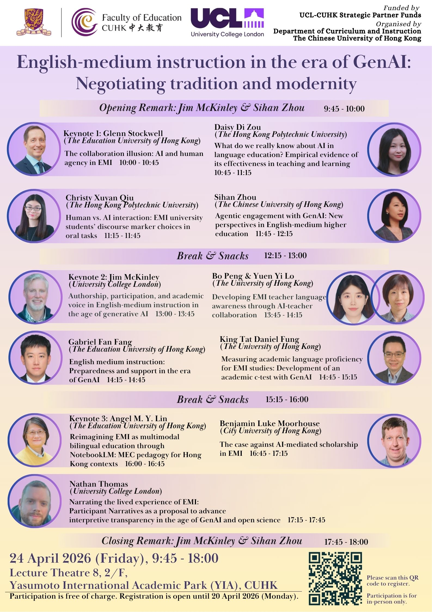

2026-2027
Orchestrating listening in EMI university lectures: A multimodal perspective of students' strategic lecture comprehension
General Research Fund (GRF), Research Grants Council, HKD $489,740 (PI).
Sihan Zhou's research focuses on self-regulated language learning, English medium instruction, and technology-assisted language learning.
Listening strategies, metacognition, motivation, self-efficacy, and students' transition into English-medium higher education.
EMI policy, student and teacher experiences, transnational universities, and language support in multilingual academic settings.
Mobile-assisted self-regulated listening, AI-supported learning, digital feedback, and online learning communities.
General Research Fund (GRF), Research Grants Council, HKD $489,740 (PI).
Early Career Scheme (ECS), Research Grants Council, HKD $617,680 (PI).
Direct Grant, CUHK, HKD $75,840 (PI).
Direct Grant, CUHK, HKD $75,000 (PI).
PDTL Grant, CUHK, HKD $45,500 (PI).
Swire Doctoral Scholarship.
British Council, GBP £25,000 (Researcher).
Innovate UK Knowledge Transfer Partnership, GBP £133,000 (Researcher).
An international symposium on negotiating tradition and modernity in English-medium instruction, organised by the Department of Curriculum and Instruction at CUHK with UCL-CUHK Strategic Partner Funds.
24 April 2026, Lecture Theatre 8, Yasumoto International Academic Park, CUHK.
Symposium page